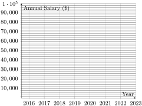
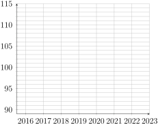

The unemployment rate is the percentage of people in the labor force who are unemployed and actively seeking work. Going into the Covid pandemic in January 2020, the unemployment rate in the United States was 3.5%. In May of that year, unemployment was 13.2%. There are many ways that this change in unemployment rate could be described. Fill in the blanks in the following statements so they correctly describe this change.
(a)
From January 2020 to May 2020 the unemployment rate increased by percentage points. (Hint: You are computing an absolute change here.)
(b)
From January 2020 to May 2020 the unemployment rate increased percent. (Hint: You are computing a relative change here.) Round to the nearest percent.
(c)
From January 2020 to May 2020 the unemployment rate (fill in with "nearly" or "more than") (fill in with "tripled" or "quadrupled").
Activity3.2.2.
The table below presents data on the proportion of smokers in several countries.
Table3.2.1.Percentage of Smokers by Country
Country
Greece
Germany
France
Sweden
Canada
% of Smokers
39.1
28.0
34.6
8.0
17.5
(a)
Write a statement comparing the smoking rates of people in Greece and Sweden, using a measure of absolute change.
(b)
Write a statement comparing the smoking rates of Canada and Greece, using a measure of relative change.
(c)
Describe what you learned by writing a statement comparing the smoking rates of Canada and Greece. Use phrases similar to "almost double,"" "more than triple," and "almost a fourth of."
Activity3.2.3.
Inflation is the rate at which the general level of prices for goods and services is rising and, consequently, the buying power of currency is falling. In other words, if everything else (rent, groceries, utilities, etc.) gets more expensive, but your salary stays the same, your buying power decreases. To account for that, some state and private sector employees get annual salary adjustments, often referred to as Cost of Living Adjustment (COLA).
Suppose Gracelyn’s pre-tax income was $65,800 in 2022.
(a)
Gracelyn spent $41,000 on expenses in 2022. What percent of her income did she spend on expenses?
(b)
Gracelyn spent $45,000 on expenses in 2023. How much would she have needed to make in 2023 in order to have the same buying power, i.e. in order to spend the same percent of her income on expenses as she did in 2022?
is often used in the US to measure inflation. The Bureau of Labor Statistics calculates the CPI every month by looking at the prices of a collection of goods and services, including cars and housing. The inflation rate is the relative change in the CPI.
The average price of a new car in 1945 was $1,020. The Consumer Price Index was 18.0 in 1945 and 271.0 in 2021. Use this information to answer the following question: $1,020 in 1945 has the same buying power as how many dollars in 2021?
Activity3.2.5.
The table below lists the U.S. national debt at various times in history. We need to adjust these figures for inflation. Adjusting them will allow us to more accurately compare the sizes of these debts to one another.
to adjust the national debt for each year so that the debt is expressed in 2021 dollars. Enter the adjusted amounts in the table below. Round to two decimal places.
Table3.2.2.Adjusting the National Debt for Inflation
Year
National Debt (Billion $)
CPI (average annual)
National Debt Adjusted for Inflation (Billion 2021 $)
1945
259
18.0
1980
930
82.4
1995
4,974
152.4
2010
14,025
218.1
2021
28,429
271.0
(b)
When adjusted for inflation, in which year was the national debt largest? smallest?
Activity3.2.6.
When communicating information about very large numbers like the national debt, it can be useful to use tools like infographics and comparing sizes of real objects.
(a)
When communicating quantitative information, an infographic can be a useful tool. In order to help people understand the national debt adjusted to 2021 dollar amounts, we can draw bags of money to illustrate the change. If we use a 4 cm segment (4 bags of money) to represent the 1945 national debt adjusted for inflation (see figure below), how long should the segments be for each of the other years’ national debt after adjusting to 2021 amounts? Round your answers to the nearest tenth of a centimeter.
(b)
According to the U.S. Treasury Department, a one-hundred-dollar bill is 0.0043 inches thick. Therefore, a stack of 100 one-hundred-dollar bills would be 0.43 inches thick. Assume that we could create stacks of one-hundred-dollar bills that would never topple over, no matter the height. How tall is the stack of money that represents each year’s inflation-adjusted national debts?
Activity3.2.7.
Now let us consider a different approach to analyzing the U.S. national debt over time. Just as the cost of dinner and a movie for a person before and after college can be compared as a percentage of their income, economists frequently compare the national debt at different times in history by measuring it as a percentage of Gross Domestic Product (GDP). The GDP is the estimated value of all the goods and services that are produced in a country in a given year.
(a)
Fill in the table below with the national debt as a percentage of each year’s GDP. Round to the nearest percentage point.
Table3.2.3.Comparing the National Debt to GDP
Year
National Debt (Billion $)
GDP (Billion $)
National Debt as Percent of GDP
1945
259
228
1980
930
2,857
1995
4,974
7.640
2010
14,025
15,049
2021
28,429
23,315
(b)
After adjusting the debt relative to GDP, in which year was the national debt the largest? In which year was the debt smallest? (Note: In this case, we say the national debts are being compared in relative terms.)
(c)
Is it better to measure the national debt in absolute terms or relative terms? Write a brief explanation.
Activity3.2.8.
Lucian is a Sales Associate at a retail store for a cell phone provider. His company offers many opportunities for growth in the organization. Lucian is starting some long-term planning and wants to decide if he should stay with this company and seek a promotion, or if he wants to explore other options with another company, or even try a new career.
Lucian has access to the following data from the past seven years about typical salaries for Sales Associates, Sales Supervisors, and Regional Sales Managers. Notice that salaries do not always increase from one year to the next. Lucian wants to get a better idea about how the salaries change over time for each of these positions, to gain insight into his earning potential if he stays with his current company.
Table3.2.4.Salaries of Sales Personnel (2016 - 2023)
2016
2017
2018
2019
2020
2021
2022
2023
Sales Associate
$41,500
$42,600
$42,800
$42,000
$43,100
$43,600
$44,700
$46,300
Sales Supervisor
$56,500
$57,100
$58,700
$57,300
$60,500
$59,600
$60,700
$62,600
Regional Sales Manager
$85,000
$89,500
$87,400
$82,700
$87,100
$89,000
$86,100
$91,000
(a)
What do you notice about the figures in this table? What are some advantages or disadvantages of only using this table to compare salaries to make a decision? Be sure to describe the advantages and disadvantages quantitatively.
(b)
Make a quick sketch of a graph or visual display of these data. To make your graph easier to read, consider using different color ink to represent each of the positions.

Blank axes. The horizontal axis is labeled the years between 2016 and 2023. The vertical axis is labeled from $0 to $100,000 in $10,000 increments.
Figure3.2.5.Salaries of Sales Personnel (2016 - 2023)
(c)
What are some advantages or disadvantages of using a graph like the one you made above to visualize data over time?
Activity3.2.9.
(a)
Which position seems to show the most growth in salary over the past seven years? What particular quantities would be valuable for Lucian to notice to help make his decision?
(b)
The table below shows absolute and relative changes in salaries for each position from 2016 to 2023.
Table3.2.6.Absolute and Relative Changes from 2016 to 2023
Position
Absolute Change
Relative Change
Sales Associate
$4,800
11.6%
Sales Supervisor
$6,100
10.8%
Regional Sales Manager
$6,000
7.1%
(i)
Explain what you observe in the numbers and in the absolute changes and relative changes. For example, you could explain how the Sales Associate can have the lowest absolute increase in salary but the highest relative increase.
(ii)
Now calculate the absolute and relative changes in salary from 2021 to 2022. Fill in the table below with your answers. Round your answers to the nearest tenth of a percent.
Table3.2.7.Absolute and Relative Changes from 2021 to 2022
Position
Absolute Change
Relative Change
Sales Associate
Sales Supervisor
Regional Sales Manager
(iii)
Which position had the greatest absolute increase in salary? Which position had the greatest relative increase in salary? Write an explanation for what you observe in the absolute changes and relative changes.
Activity3.2.10.
One way to systematically look at a large set of relative changes over time is to create an index. We used the Consumer Price Index earlier to help us understand inflation. Now, you’ll compute a salary index to help Lucian’s career discernment. A salary index will look like a table of numbers that answer the question, "The salary for this year is what percent of the base year?"
(a)
Use the salary information from the earlier to create a salary index for each of the three positions. You will be creating three separate indices, one for Sales Associate, one for Sales Supervisor, and one for Regional Sales Manager. Use 2016 as the base year, and round each answer to the nearest tenth.
Table3.2.8.Salary Index (Base Year = 2016)
Year
Sales Associate
Sales Supervisor
Regional Sales Manager
2016
\(100.0\)
\(100.0\)
\(100.0\)
2017
\(102.7 = \frac{42,600}{41,500} \times 100\)
\(101.1 = \frac{57,100}{56,500} \times 100\)
\(105.3 = \frac{89,500}{85,000} \times 100 \)
2018
2019
2020
2021
2022
2023
(b)
Use quantities in your index table to explain your observations and ideas about what Gary should know about how the salaries change over time.
(c)
Make a graph of the indices that you created. What are the advantages and disadvantages of using this graph to interpret how the salaries changed over time?

Blank axes. The horizontal axis is labeled the years between 2016 and 2023. The vertical axis is labeled from 90 to 115 in increments of 5.
Figure3.2.9.Salary Indexes of Sales Personnel (2016 - 2023)